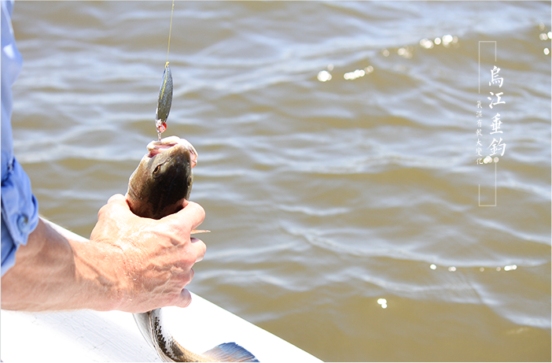

The wujiang river is a place that can be used all year round, and the spring and deep fall are the good season for the big prang. Carp fishing, grass or between summer and Mid-Autumn, large grass on mainly in six to eight months, especially in late June to middle of July, as long as it is not to choose the temperature has great change in the weather is fine, the condition of the long sunny after the rain and cooling temperature recovery after 1 to 2 days later is a good chance the wujiang river fishing. A good veto of the bait will determine how much fish you get, and the fish in wujiang, although they have a lot of food, have their own food, such as rice, baby corn, and erbium. But there is also a preference for food, mainly for the long term, so it's best to use fish feed as a feedstock for your hand. The erbium is also to be based on the scent type.
